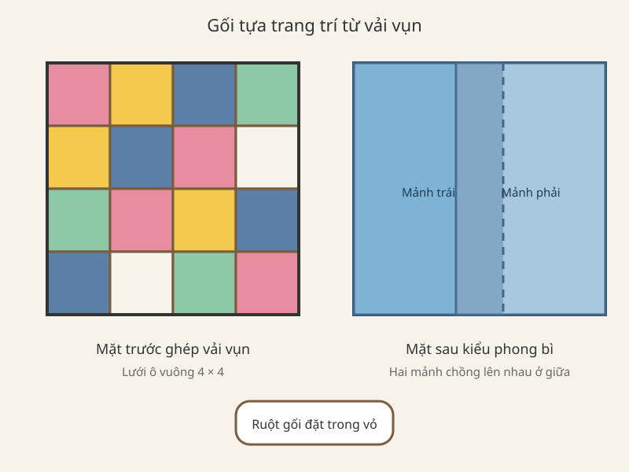

Tự làm gối tựa trang trí từ vải vụn
Tác giả: Ruler
Một chiếc ghế dài hay một chiếc giường trong phòng nhỏ thường chỉ cần một hoặc hai chiếc gối tựa là đã có điểm nhấn. Gối tựa không làm phòng rộng hơn, nhưng nó làm chỗ ngồi trông có chủ ý hơn, và vì bạn chạm vào nó mỗi ngày nên cảm giác của vải cũng quan trọng như màu sắc. Bài viết này hướng dẫn làm một chiếc gối tựa từ vải vụn, theo cách làm vỏ gối rời: mặt trước ghép từ nhiều mảnh vải nhỏ, mặt sau mở kiểu phong bì để bạn tháo vỏ ra giặt và thay vỏ khác khi muốn đổi màu.
Gối tựa trong bài này khác với hai món vải đã có trên website. Bài 8, "Tận dụng quần áo cũ làm thảm chùi chân và túi vải đựng đồ", làm thảm và túi vải từ quần áo cũ, còn bài này làm gối tựa để đặt trên ghế và giường, với mặt trước ghép vải vụn và mặt sau mở kiểu phong bì. Bài 1 có món vỏ gối từ một chiếc áo cũ, còn bài này không dùng một mảnh vải lớn duy nhất làm vỏ, mà ghép nhiều mảnh vụn thành một mặt gối mới, rồi may thành vỏ rời có ruột riêng. Vì vậy, bài này không viết lại các bước cắt và bện của Bài 8, hay cách làm vỏ gối một mảnh của Bài 1. Bài này cũng không bàn tới chuyện trồng cây cảnh trong nhà hay cắm giữ hoa tươi.
Chọn cỡ gối trước khi cắt vải
Việc đầu tiên không phải là cắt vải, mà là quyết định chiếc gối sẽ đặt ở đâu và lớn cỡ nào. Gối quá nhỏ đặt trên ghế dài lớn sẽ trông như một món đồ mẫu, còn gối quá lớn đặt trên ghế nhỏ sẽ chiếm hết chỗ ngồi. Bạn nên đo chiều rộng chỗ ngồi và chiều cao lưng ghế hoặc đầu giường trước, rồi mới chọn cỡ gối. Bảng dưới đây dùng các cỡ gối vuông thường gặp theo hướng dẫn của Loftloom.
| Cỡ gối vuông | Hợp đặt ở đâu |
|---|---|
| Khoảng 40 × 40 cm (16 × 16 inch) | Ghế đơn, ghế đọc sách, đặt lớp trước của một chồng gối |
| Khoảng 45 × 45 cm (18 × 18 inch) | Ghế dài nhỏ, ghế bành, giường đơn; đây là cỡ thường gặp nhất |
| Khoảng 50 × 50 cm (20 × 20 inch) | Ghế dài cỡ vừa, giường đôi; cỡ này dùng được cho nhiều phòng |
| Khoảng 55 × 55 cm (22 × 22 inch) | Ghế dài sâu, ghế góc lớn, đặt lớp sau của một chồng gối |
Ruột gối và vỏ gối không cùng một cỡ. Theo hướng dẫn của Loftloom, bạn nên mua ruột gối lớn hơn vỏ gối khoảng 2,5 đến 5 cm, tức khoảng 1 đến 2 inch, để gối trông căng và đầy thay vì xẹp xuống. Ví dụ, vỏ gối khoảng 45 × 45 cm nên dùng ruột gối khoảng 50 × 50 cm. Bạn nên mua ruột gối trước hoặc đo ruột gối bạn đã có sẵn, rồi mới tính kích thước vải theo ruột gối đó.
Gom và chọn vải vụn
Vải vụn dùng cho bài này là những mảnh vải còn lành, còn lại sau khi may đồ, sau khi cắt quần áo cũ, hoặc lấy từ ga trải giường, rèm cửa và khăn trải bàn không dùng nữa. Bạn nên trải tất cả mảnh vải ra một mặt phẳng lớn, rồi chia thành ba nhóm: dùng được ngay, dùng được sau khi cắt bỏ phần hỏng, và không nên dùng. Cách chia này giúp bạn thấy mình có bao nhiêu màu và bao nhiêu vải, trước khi quyết định mẫu gối nào là khả thi.
Nhóm dùng được ngay là vải cotton, vải thô và vải canvas mỏng còn dày dặn, mặt vải phẳng, không rách, không sờn nhiều ở mép. Vải cotton là lựa chọn dễ may nhất cho người mới, vì nó ít trơn, ít co giãn, đường cắt thẳng và đường may không bị xô lệch nhiều. Vải thô và vải canvas mỏng cũng hợp làm gối tựa, vì chúng đứng dáng hơn và chịu được việc tựa lưng hằng ngày.
Trước khi cắt, bạn nên giặt sạch vải vụn, phơi khô hoàn toàn rồi ủi phẳng. Hướng dẫn của Aubree Originals nêu rõ: bạn luôn nên giặt vải trước khi may, để kiểm tra vải có co lại hay không và để màu không lem sang vải khác. Sau khi giặt và ủi, bạn xếp các mảnh vải cạnh nhau trên bàn và bỏ bớt những mảnh có màu lạc hẳn khỏi nhóm còn lại. Một chiếc gối đẹp thường chỉ xoay quanh hai hoặc ba màu chính, lấy từ một món đồ đã có sẵn trong phòng như rèm cửa hay ga giường.
Ba mẫu mặt trước để bạn chọn
Mặt trước của gối là phần người khác nhìn thấy nhiều nhất, nên bạn nên chọn mẫu trước khi cắt. Ba mẫu dưới đây đều dùng cùng một nguyên tắc: ghép các mảnh vải vụn thành một tấm vải lớn bằng mặt gối, rồi mới may tấm đó thành vỏ gối. Bạn chỉ cần chọn một mẫu cho chiếc gối đầu tiên, làm xong rồi mới thử mẫu khác ở chiếc sau.
| Mẫu | Cách xếp mảnh vải | Hợp với phòng nào |
|---|---|---|
| Sọc ngang | Xếp các dải vải nằm ngang, dải rộng xen kẽ dải hẹp, màu đậm xen kẽ màu nhạt | Phòng ngủ nhỏ và ghế dài đơn giản, vì sọc ngang làm mặt gối trông rộng và gọn |
| Ô vuông đều | Xếp các ô vuông bằng nhau thành lưới bốn hàng bốn cột, xen kẽ màu trơn và màu có hình nhỏ | Phòng có nhiều đồ nhỏ, vì ô vuông đều làm mặt gối trông ngăn nắp |
| Ô lớn ở giữa | Một ô vuông lớn ở giữa, xung quanh là các dải vải hẹp hơn làm khung, màu khung nhạt hơn màu ô giữa | Ghế đọc sách và góc làm việc, vì ô lớn ở giữa làm điểm nhìn rõ ràng |
Mẫu sọc ngang là mẫu dễ làm nhất. Bạn cắt các dải vải dài bằng chiều rộng mặt gối, rộng từ khoảng 4 cm đến khoảng 8 cm, rồi xếp chúng theo thứ tự màu bạn muốn. Bạn nên đặt một dải màu trơn giữa hai dải có hình, để mắt có chỗ nghỉ, và nên lặp lại một màu hai hoặc ba lần trong cùng một mặt gối, thay vì dùng mỗi màu chỉ một lần.
Với mẫu ô vuông đều, bạn có thể chia mặt gối khoảng 40 × 40 cm thành mười sáu ô vuông, mỗi ô khoảng 10 cm trước khi may. Cách chia mặt gối thành lưới ô vuông và may các mảnh lại với nhau bằng đường may khoảng 0,6 cm, tức khoảng một phần tư inch, cũng là cách làm trong hướng dẫn gối ghép vải của Sew4Home, và hướng dẫn đó ghi rõ bạn có thể thu nhỏ hay phóng to lưới để vừa với cỡ gối khác.
Tính kích thước vải và cắt
Bạn nên tính kích thước vải trên giấy trước khi cắt, vì cắt sai một mảnh là phải cắt lại cả hàng. Bài này lấy ví dụ chính là gối vuông khoảng 40 × 40 cm, tức khoảng 16 × 16 inch, vì đây là cỡ có sẵn số đo trong cả hai hướng dẫn đã đối chiếu là Aubree Originals và Sew4Home. Nếu ruột gối của bạn lớn hơn, bạn áp dụng cùng một cách tính, chỉ thay số đo ruột gối vào.
Mặt trước của vỏ gối là một tấm vải ghép, cắt lớn hơn ruột gối một chút để chừa đường may. Theo cách tính của Aubree Originals, mặt trước cho ruột gối 16 × 16 inch nên cắt khoảng 16,5 × 16,5 inch, tức khoảng 42 × 42 cm, vì mỗi cạnh cộng thêm khoảng 0,6 cm đường may. Bạn nên cắt tấm ghép xong rồi mới cắt gọn lại cho đúng số đo này, thay vì cố cắt từng mảnh vụn đúng số đo ngay từ đầu. Cách làm này cho phép bạn sửa lại một đường may lệch mà không làm mặt gối bị nhỏ đi.
| Mảnh vải | Kích thước cắt cho ruột gối khoảng 40 × 40 cm |
|---|---|
| Mặt trước ghép vải vụn | Khoảng 42 × 42 cm sau khi ghép và cắt gọn |
| Mảnh sau thứ nhất | Khoảng 42 × 29 cm, một cạnh dài sẽ gấp mép làm miệng mở |
| Mảnh sau thứ hai | Khoảng 42 × 29 cm, cùng kích thước với mảnh sau thứ nhất |
Ghép mặt trước từ vải vụn
Ghép mặt trước là bước cần kiên nhẫn nhất, nhưng cũng là bước quyết định chiếc gối có đẹp hay không. Bạn nên may thử trên hai mảnh vải vụn trước, để kiểm tra đường may của máy và độ căng của chỉ, rồi mới may các mảnh thật. Bạn nên dùng chỉ cùng tông với màu vải chiếm nhiều nhất trong mặt gối, và dùng kim may vải cotton cỡ vừa, không dùng kim đã cùn hay cong.
Bạn đặt hai mảnh vải úp mặt phải vào nhau, mép vải thẳng hàng, ghim cố định hai đầu và giữa, rồi may một đường thẳng dọc theo mép vải, chừa đường may khoảng 0,6 cm, tức khoảng một phần tư inch. Cách may này theo hướng dẫn gối ghép vải của Sew4Home, trong đó gần như mọi đường may ghép đều dùng đường may khoảng một phần tư inch. Sau mỗi đường may, bạn mở hai mảnh vải ra, ủi phẳng đường may sang một bên, rồi mới may mảnh tiếp theo vào. Ủi sau mỗi đường may là việc tốn thời gian nhưng rất đáng làm, vì nó giúp mặt gối phẳng và giúp các đường may tiếp theo thẳng hàng.
May vỏ gối kiểu phong bì
Vỏ gối kiểu phong bì là loại vỏ rời, không cần khóa kéo hay cúc, và bạn có thể tháo ra giặt riêng. Cách làm này hợp với người mới may, vì nó chỉ dùng đường may thẳng, và hợp với nhà nhỏ, vì bạn có thể làm nhiều vỏ khác nhau cho cùng một ruột gối, thay vì mua nhiều ruột gối. Hướng dẫn của Aubree Originals gọi kiểu đóng mở bằng hai mảnh vải chồng lên nhau này là cách dễ nhất để tự làm vỏ gối, và khuyên người mới nên bắt đầu với kiểu này trước khi thử kiểu khóa kéo.
Trước hết, bạn làm mép cho hai mảnh vải sau. Bạn gấp một cạnh dài của mỗi mảnh vải vào trong khoảng 0,6 cm, ủi phẳng, rồi gấp thêm một lần nữa khoảng 1 cm và ủi phẳng, rồi may một đường thẳng dọc theo mép đã gấp. Cách gấp hai lần này giúp mép vải không bị sờn và giúp miệng mở trông gọn gàng. Hướng dẫn của Aubree Originals dùng cách gấp hai lần tương tự, với lần gấp đầu khoảng 0,6 cm và lần gấp sau khoảng 1 cm, rồi may một đường thẳng dọc theo mép đã gấp. Hướng dẫn của ThriftyFun cũng gấp mép mở của hai mảnh sau vào trong hai lần, mỗi lần khoảng 1,3 cm, tức khoảng nửa inch, rồi may lại cho chắc.
Mặt sau gồm hai mảnh vải chồng lên nhau, mỗi mảnh khoảng 42 × 29 cm cho ruột gối khoảng 40 × 40 cm, với phần chồng lên nhau khoảng 10 đến 13 cm. Hướng dẫn của ThriftyFun khuyên phần chồng lên nhau ít nhất khoảng 5 cm, tức khoảng 2 inch, để miệng mở không bị hở khi bạn lồng ruột gối vào. Bạn đặt hai mảnh sau lên mặt trước, mặt phải úp xuống, mép đã gấp nằm ở giữa, ghim bốn góc rồi may một đường thẳng quanh bốn cạnh với đường may khoảng 0,6 cm. Sau đó, bạn cắt bớt vải thừa ở bốn góc, lộn vỏ ra mặt phải và đẩy góc ra cho vuông.

Lồng ruột, đặt gối và dùng thử
Bạn nên lồng ruột gối vào vỏ khi vỏ còn phẳng trên bàn, thay vì cầm vỏ lên lồng trên không. Bạn gấp ruột gối làm đôi theo chiều dọc, luồn một nửa ruột qua miệng mở ở mặt sau, rồi thả ruột ra cho nó nở đều trong vỏ. Bạn vỗ nhẹ bốn góc vỏ để ruột dồn vào góc, rồi chỉnh lại mặt trước cho các mảnh vải ghép không bị nhăn. Bạn nên kiểm tra miệng mở ở mặt sau: hai mảnh vải sau có chồng lên nhau đủ để che kín ruột không, và khi bạn ấn nhẹ vào giữa gối thì ruột có bị lộ ra ngoài không. Nếu miệng mở bị hở, bạn nên tháo vỏ ra và may lại với phần chồng lên nhau lớn hơn, thay vì cố nhét ruột vào sâu hơn, vì nhét sâu hơn sẽ làm gối bị méo.
Giặt, bảo quản và sửa lỗi
Vỏ gối kiểu phong bì tháo ra được nên bạn nên giặt vỏ riêng, không giặt cả ruột gối cùng lúc, trừ khi ruột gối của bạn giặt được và bạn đã đọc hướng dẫn trên nhãn ruột. Bạn nên lộn vỏ gối ra mặt trái trước khi giặt, giặt bằng tay hoặc giặt máy ở chế độ nhẹ, dùng bột giặt thông thường, và phơi vỏ ở nơi thoáng gió, có nắng nhẹ. Bạn không nên vắt vỏ gối quá mạnh, vì vắt mạnh sẽ làm các đường may ghép bị nhăn và làm mặt gối bị méo.
Ruột gối nên được phơi nắng nhẹ và vỗ phồng lại sau một thời gian dùng, vì ruột gối bị xẹp sẽ làm vỏ gối trông rộng hơn và làm các góc vỏ bị rũ xuống. Bạn nên kiểm tra đường may ở bốn góc vỏ sau mỗi lần giặt, và khâu lại ngay khi thấy chỉ bị bung, thay vì đợi đến khi đường may rách dài.
Kết luận
Tự làm gối tựa trang trí từ vải vụn là một dự án vừa sức với người mới may, nếu bạn nhớ đúng thứ tự: chọn cỡ gối theo chỗ đặt trước, chọn ruột gối lớn hơn vỏ gối một chút, giặt và ủi vải vụn trước khi cắt, xếp mẫu mặt trước trên bàn rồi mới may, ghép từng hàng và ủi sau mỗi đường may, rồi mới may vỏ kiểu phong bì để tháo ra giặt được. Bạn chỉ cần một chiếc gối đầu tiên, cỡ nhỏ, mẫu sọc ngang hoặc ô vuông đều, để thử xem màu sắc và cảm giác của vải có hợp với phòng của bạn hay không. Khi chiếc đầu tiên đã dùng tốt, bạn có thể làm thêm một hoặc hai chiếc cùng tông màu, dùng vải vụn còn lại, mà không cần mua thêm nhiều vật liệu mới.
Nguồn tham khảo
- Aubree Originals, "How to Sew an Envelope Pillow Cover" — dùng cho các khẳng định: vỏ gối kiểu phong bì là cách dễ nhất để tự làm vỏ gối; cần một mảnh mặt trước và hai mảnh mặt sau chồng lên nhau để tạo miệng mở; mặt trước cho ruột gối 16 × 16 inch nên cắt khoảng 16,5 × 16,5 inch; mỗi mảnh sau cho ruột gối 16 × 16 inch nên cắt khoảng 16,5 × 11,5 inch với phần chồng lên nhau khoảng 5 inch; luôn giặt vải trước khi may để kiểm tra vải có co lại hay không và để màu không lem sang vải khác; gấp mép mở của mảnh sau hai lần rồi may một đường thẳng; may quanh vỏ gối với đường may khoảng một phần tư inch (truy cập 23/11/2026): https://www.aubreeoriginals.com/envelope-pillow-cover/
- ThriftyFun, "Scrap Pillow With Envelope Opening" — dùng cho các khẳng định: mặt sau gồm hai mảnh vải chồng lên nhau, phần chồng lên nhau ít nhất khoảng 2 inch; gấp mép mở của hai mảnh sau vào trong hai lần rồi may lại (truy cập 23/11/2026): https://www.thriftyfun.com/Scrap-Pillow-With-Envelope-Opening.html?print
- Sew4Home, "Trixie's Easy Patchwork Pillow" — dùng cho các khẳng định: ghép vải vụn thành gối là cách dùng các mảnh vải lẻ còn lại; lưới ô vuông cho ruột gối 16 × 16 inch có thể thu nhỏ hay phóng to để vừa với cỡ gối khác; gần như mọi đường may ghép đều dùng đường may khoảng một phần tư inch; sau khi may xong thì cắt bớt vải thừa ở góc, lộn vỏ ra mặt phải và đẩy góc ra cho vuông (truy cập 23/11/2026): https://sew4home.com/scrapbusters-trixies-easy-patchwork-pillow/
- Loftloom, "Throw Pillow Sizes and Arrangement Guide" — dùng cho các khẳng định: các cỡ gối vuông thường gặp là 16 × 16 inch, 18 × 18 inch, 20 × 20 inch và 22 × 22 inch; gối 18 × 18 inch là cỡ thường gặp nhất, gối 20 × 20 inch hợp với ghế dài cỡ vừa; nên mua ruột gối lớn hơn vỏ gối khoảng 1 đến 2 inch, ví dụ vỏ 18 × 18 inch dùng ruột 20 × 20 inch và vỏ 20 × 20 inch dùng ruột 22 × 22 inch (truy cập 23/11/2026): https://loftloom.com/ideas/throw-pillow-size-guide